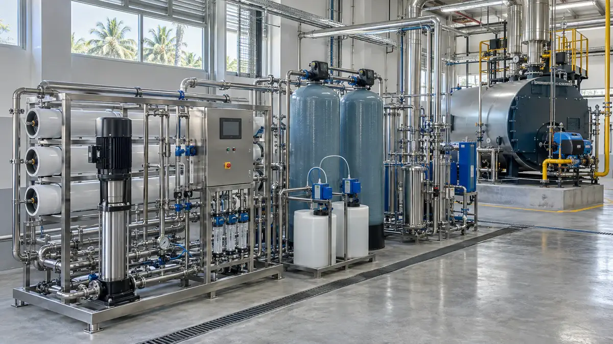
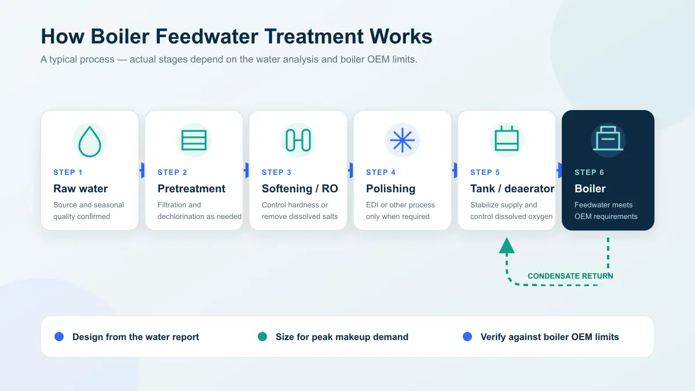
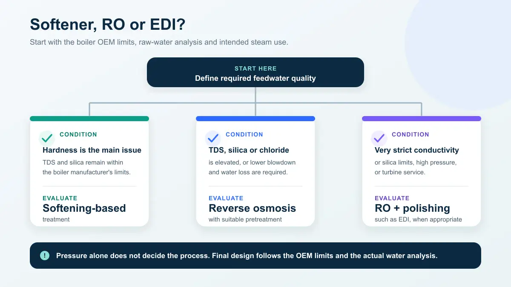
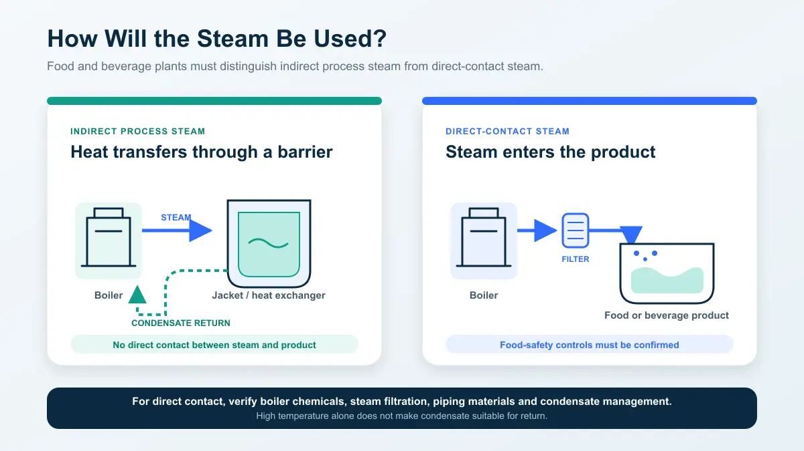

Boiler Feedwater Systems for Food and Beverage Plants in the Philippines: How They Work, How to Select and How to Buy
Choose an RO system from your water analysis — not from a supplier's standard price list
Request an Engineering Review ↗
How do you select a boiler feedwater system for a food or beverage plant?
Start from the boiler manufacturer's feedwater specifications and a complete raw-water analysis — never from a standard package. Softening-based treatment can be enough for lower-pressure boilers where hardness is the main problem; RO enters when TDS, silica, chloride or conductivity is elevated or blowdown must be reduced; high-pressure boilers, turbines and strict steam-purity requirements add EDI or another polishing stage. KONCHE, manufacturing water-treatment equipment since 1997 (0.25–50 t/h), configures boiler feedwater systems from the water report up.
On this page
- How the system works — process outline and what each stage does
- The information needed before selection — boiler, water and steam data
- Which configuration you need — softening, softening + RO, RO + polishing
- Steam use in food processing — indirect, direct-contact and turbine service
- Makeup water and tank sizing — the water balance that sets capacity
- Comparing total cost of ownership — and what quotations must state
- Selecting a supplier in the Philippines — six checks in order
Related: Water refilling station business guide · Global edition of this guide · Reverse Osmosis Systems
What is a boiler feedwater system?
A boiler feedwater system includes the treatment, storage and delivery equipment installed upstream of the boiler. It may cover raw-water filtration, softening or demineralization, deaeration, the feedwater tank and boiler feed pumps.
This is not the same as internal boiler-water treatment. The feedwater system controls hardness, dissolved salts, silica and oxygen before the water enters the boiler. Internal chemical treatment and blowdown then help control scale, corrosion and the concentration of dissolved solids inside the boiler. Both parts must work together to keep the water within the boiler manufacturer's specified limits. (If the plant also runs a separate bottled or refilled drinking-water line, that is a different treatment train with different standards — see our Philippine water refilling station guide.)
How does a boiler feedwater system work?
The process should be designed from the raw-water analysis. Not every project needs the same filters or treatment stages. A common process outline is:
- Multimedia filtration removes turbidity, suspended solids and particles. Whether it is needed depends on the raw-water quality.
- Activated carbon filtration can remove residual chlorine and some organic matter. When the system uses polyamide RO membranes and the feedwater contains free chlorine, reliable dechlorination is required.
- Softening or demineralization is the main process decision. A softener removes calcium and magnesium hardness but does not reduce TDS or silica. RO removes most dissolved salts.
- EDI and other polishing systems are suitable only when the feedwater meets their inlet requirements and the project has strict product-water specifications. They cannot treat untreated raw water directly.
- Mechanical deaeration and oxygen-scavenging chemicals control dissolved oxygen and corrosion risk. The correct approach depends on boiler pressure, temperature, the manufacturer's requirements and the overall feedwater design. Chemical oxygen scavengers are not an automatic substitute for mechanical deaeration in every project.
- The feedwater tank and feed pumps stabilize water temperature, level, pressure and flow, and receive condensate that has been confirmed as suitable for return.

What equipment can the system include?
A boiler feedwater system may include filters, softeners, RO membrane skids, chemical-dosing equipment, EDI, a deaerator, a feedwater tank, feed pumps, instruments and a control panel. Not every project needs every item.
During procurement, ask the supplier to explain the design basis for each treatment stage using the raw-water report and the boiler manufacturer's feedwater requirements. A fixed process train should not be applied to every project without review.
KONCHE has manufactured water-treatment equipment since 1997. Its boiler feedwater systems cover rated treatment capacities from 0.25 to 50 t/h. The process, materials and level of automation should be selected for the individual project. Sector references across food, beverage and other applications are collected on KONCHE's industry-solutions page.
Why must boiler feedwater be treated?
Feeding untreated well water or municipal water directly into a boiler creates three main risks:
- Scale: Scale transfers heat far less effectively than steel. Even a relatively thin deposit acts as insulation, increasing fuel consumption and creating local overheating that can shorten tube life. The U.S. Department of Energy addresses waterside scale as a specific steam-efficiency issue in its Steam Systems resources.
- Corrosion: Dissolved oxygen and low-pH water can corrode feedwater piping and boiler components. Under-deposit corrosion can accelerate localized metal failure.
- Carryover: When dissolved solids become too concentrated in the boiler water, droplets and salts can be carried into the steam system. This can contaminate the process and damage valves, piping and downstream equipment.
The purpose of feedwater treatment is therefore to prevent scale, corrosion and carryover while meeting steam-quality requirements and reducing blowdown, fuel and makeup-water losses.
What information is needed before system selection?
Before asking suppliers for quotations, prepare the following information:
- boiler rated evaporation capacity, operating pressure and daily operating hours;
- boiler manufacturer's feedwater and boiler-water specifications;
- raw-water source, including seasonal water-quality and temperature variations;
- a complete raw-water analysis covering pH, conductivity, TDS, total hardness, calcium, magnesium, alkalinity, silica, iron, manganese, chloride, sulfate, turbidity, free chlorine and temperature;
- steam use, including whether the steam contacts food directly, provides indirect heating or drives a turbine;
- condensate return rate, maximum continuous makeup demand and load variation;
- available power supply, installation space, drainage conditions and target commissioning date.
Without these inputs, a supplier can provide only a budgetary concept — not a reliable performance guarantee.
Which configuration does your boiler need?
The three categories below can support an initial assessment, but operating pressure alone should not determine the final process. The boiler manufacturer's water-quality limits and the raw-water analysis take priority.

| Configuration | When to consider it | Typical process | Typical application |
|---|---|---|---|
| Level 1: Softening-based treatment | Usually for lower-pressure boilers when hardness is the primary raw-water problem and TDS and silica remain within the manufacturer's limits | Filtration as required + softener, supported by internal chemical treatment and blowdown control | Process-steam boilers in smaller food and beverage plants |
| Level 2: Softening or scale control + RO | Elevated TDS, silica, chloride or conductivity; a need to reduce blowdown and makeup-water losses; or tighter feedwater limits | Pretreatment + single-pass RO, with softening or antiscalant dosing selected from the scaling assessment | Medium and large food-processing, brewing, beverage and edible-oil facilities |
| Level 3: RO + polishing | High-pressure boilers, steam turbines or applications with strict conductivity and silica limits | RO system + EDI or another polishing process; EDI feedwater must meet the equipment manufacturer's limits | High-pressure boilers and applications with strict steam-purity requirements |
These categories are for preliminary selection only. The final process, product-water specifications and performance guarantees must be based on the boiler manufacturer's requirements, the raw-water analysis, steam use and the standards applicable to the project.
When is a softener sufficient?
For a lower-pressure boiler, a softening-based system may be appropriate when hardness is the main raw-water concern and TDS and silica remain within the boiler manufacturer's limits. Ion-exchange softeners remove calcium and magnesium hardness but do not reduce TDS. Dissolved solids remaining after softening must therefore be controlled through the boiler's concentration cycles and blowdown rate, while internal chemical treatment manages scale and corrosion risk.
The main operating inputs for a softening system include regeneration salt, backwash water and regeneration wastewater. Ask the supplier to state salt consumption per regeneration, regeneration frequency, resin volume and whether duty/standby operation is included in the quotation.
When is softening plus RO needed?
RO should be evaluated when the raw water contains elevated TDS, silica, chloride or conductivity, when the boiler manufacturer specifies tighter feedwater limits, or when the project needs to reduce blowdown and the associated water and heat losses.
RO removes most dissolved salts. However, the need for softening, antiscalant dosing, ultrafiltration or other treatment upstream of the RO must be determined from scaling calculations and the raw-water fouling risk.
For raw water with elevated suspended solids or colloidal material, ultrafiltration may be considered ahead of the RO system. The supplier should explain the pretreatment design basis, RO recovery, concentrate flow, membrane flux and chemical-cleaning conditions.
When is EDI needed after RO? What about UV?
EDI or another polishing process can be evaluated downstream of RO for high-pressure boilers, turbine applications or projects with strict conductivity and silica limits. EDI has demanding feedwater requirements and normally needs compliant RO permeate with controlled hardness, residual chlorine, carbon dioxide and conductivity. The final design must follow both the EDI equipment requirements and the boiler manufacturer's limits.
UV is not a standard boiler feedwater treatment stage. A UV sterilizer should be evaluated only when the raw water, reuse stream or storage system presents a defined microbiological risk and the water transmittance and UV dose support effective treatment. UV does not remove hardness, TDS or silica and cannot replace softening or RO.
Why must food and beverage plants define how the steam will be used?
Steam from the same boiler may be used for jackets, heat exchangers, cleaning or sterilization, or it may contact food and food-contact surfaces directly. The intended use affects feedwater quality, boiler-chemical selection, steam filtration and monitoring requirements.

- Indirect process steam: Steam transfers heat through a jacket or heat exchanger without contacting the product. The main design priorities are normally boiler reliability, energy efficiency and condensate recovery.
- Direct-contact steam: Steam is injected into food or beverages or contacts food-processing surfaces directly. The project owner must identify the applicable food-safety requirements and confirm that boiler chemicals, steam filtration and piping materials are suitable for the process.
- Turbine or high-purity steam service: In addition to the boiler requirements, silica, sodium and conductivity may need tighter control to prevent deposits and steam contamination.
If condensate may be contaminated by product, cleaning chemicals or process fluids, provide suitable detection, isolation or discharge arrangements before returning it to the boiler system. High temperature alone does not make condensate suitable for reuse.
How should makeup-water demand and feedwater-tank capacity be calculated?
The water-treatment system must provide enough continuous output to meet the boiler's makeup demand under the most demanding operating condition. The feedwater tank absorbs load changes, variations in condensate return and short interruptions during softener regeneration or RO cleaning. It cannot compensate for a treatment system that is continuously undersized.
Makeup-water demand can be determined from the plant water balance:
A higher condensate return rate normally reduces the volume of fresh makeup water that must be treated, while recovering heat and part of the original treatment cost. System sizing should use the maximum continuous demand rather than average consumption and should account for softener regeneration, RO cleaning, equipment availability and any required standby capacity.
Feedwater-tank capacity should be based on maximum steam load, variation in condensate return, direct steam consumption, blowdown, treatment-system downtime and the boiler manufacturer's recommendations. One to two hours of storage can be used as an initial estimate, but it does not replace a complete water balance and operating review.
How should project costs be compared?
The price of a boiler feedwater system depends on raw-water quality, capacity, product-water specifications, equipment materials, automation and scope of supply. A reliable fixed price cannot be established without this project information. Buyers should compare total cost of ownership rather than equipment price alone.
The main cost categories include:
| Cost category | What the buyer should confirm |
|---|---|
| Equipment and controls | Which pretreatment, softener, RO, EDI, deaerator, pump, instrument and control-system items are included |
| Installation and commissioning | Who is responsible for piping, electrical work, foundations, installation, integrated commissioning and water-quality verification; see project support |
| Electricity and fuel impact | Power consumption of the softener, RO and pumps, together with potential water and heat savings from reduced blowdown |
| Salt, chemicals and cartridges | Expected consumption, replenishment intervals and availability in the Philippines |
| Resin and membrane elements | Specifications, manufacturer, expected service life, cleaning requirements and replacement cost |
| Backwash, regeneration and concentrate | Wastewater volume, discharge requirements and related treatment cost |
| Spares and maintenance | Wear-parts list, response time, warranty and planned-maintenance requirements |
The models, expected quantities and supply lead times for filter cartridges and consumables and spare parts should be confirmed before purchase and recorded in the contract.
What must be stated in the quotation?
To compare suppliers fairly, require every quotation to use the same design conditions and include at least the following information:
| Comparison item | What the supplier should state |
|---|---|
| Feedwater design basis | Date of raw-water analysis, design temperature, TDS, hardness, silica and other critical values |
| Guaranteed product flow | Continuous net output, daily operating hours and the water-supply arrangement during regeneration or cleaning |
| Product-water quality | Guaranteed hardness, conductivity, TDS, silica and other values linked to the boiler manufacturer's requirements |
| Recovery and wastewater | Product water, RO concentrate, filter backwash and softener-regeneration wastewater flows |
| Operating consumption | Electricity, salt and chemical consumption, plus estimated cartridge and membrane replacement intervals |
| Scope boundary | Whether tanks, pumps, dosing, piping, electrical work, installation, civil work and drainage are included |
| Materials and main components | Manufacturer, model and material of vessels, piping, membranes, pumps, valves and instruments |
| Testing and acceptance | Factory testing, site commissioning, performance-test method and acceptance criteria |
| After-sales support | Operator training, technical response, warranty coverage and spare-parts lead time in the Philippines |
If a quotation does not state its design-water conditions and performance guarantees, the buyer cannot determine whether competing prices are based on the same scope or assumptions.
How should you select a boiler feedwater-system supplier in the Philippines?
Evaluate suppliers in the following order:
- Start with the raw water and the boiler requirements: Does the supplier request a complete raw-water analysis, boiler data and feedwater specification before quoting? A fixed configuration offered without these inputs should be treated as a warning sign.
- Ask for the design basis: Can the supplier explain why softening, RO or EDI is required and show the basis for pretreatment, recovery and standby capacity?
- Require performance guarantees: Does the proposal state continuous product flow, product-water quality, wastewater volume and operating consumption under defined feedwater conditions?
- Define the supply boundary: Who is responsible for factory testing, transport, installation, integrated commissioning, water-quality verification and operator training?
- Confirm consumable availability: Are resin, salt, chemicals, cartridges and membrane elements available locally or through a dependable fast-supply channel?
- Check spares and service: Confirm the spare-parts sourcing service, fault-response process, warranty coverage and technical-support time zone.
Boiler manufacturers, installers and service companies can also integrate feedwater treatment into their projects through an OEM partnership.
When requesting a quotation, submit the boiler pressure, rated evaporation capacity, daily operating hours, manufacturer's water-quality limits, complete raw-water analysis, condensate return rate, steam use, site power and target commissioning date together. The more complete the information, the easier it is for suppliers to provide comparable configurations, performance guarantees and operating-cost estimates.
To request a project proposal, submit this information through the quotation request page or contact the KONCHE project team for further review.
Frequently asked questions
What is boiler feedwater?
Boiler feedwater is treated water supplied to a boiler. It includes fresh makeup water and returned condensate. It must meet the boiler manufacturer's water-quality limits to prevent scale, corrosion and carryover.
Why is feedwater treatment necessary in a boiler?
Feedwater treatment prevents scale, corrosion and carryover. Scale reduces heat-transfer efficiency and can overheat boiler tubes, dissolved oxygen corrodes the feedwater system, and excessive dissolved solids can cause droplets and salts to enter the steam.
Is UV necessary in a boiler feedwater system?
Not normally. UV should be evaluated only when the raw water, reuse stream or storage system presents a defined microbiological risk and the water quality supports effective UV treatment. UV does not remove hardness, TDS or silica.
How do I choose between a water softener and RO?
A softening-based system may be suitable when hardness is the main raw-water problem and TDS and silica remain within the boiler manufacturer's limits. RO should be evaluated when TDS, silica, chloride or conductivity is elevated, or when the plant needs to reduce blowdown losses. The final choice must be based on the complete raw-water analysis, the boiler manufacturer's requirements and steam use.
What requires special attention when steam contacts food directly?
Confirm the applicable food-safety and production requirements and verify that the boiler chemicals, steam filtration, piping materials and condensate management are suitable for the process. Direct-contact steam should not be treated as ordinary indirect-heating steam.
Is a water softener the same as an electric water conditioner?
No. A salt-regenerated ion-exchange softener actually removes hardness and produces regeneration wastewater. Many electric water conditioners or descaling devices claim to alter the way scale forms but do not reduce measured hardness. They cannot replace the softening stage in a boiler feedwater system. The practical test is simple: measure hardness before and after treatment.
How is feedwater-tank capacity calculated?
Carry out a water balance using maximum steam load, condensate return rate, direct steam consumption, boiler blowdown, regeneration or cleaning time and the required standby capacity. One to two hours can be used as an initial estimate, but final capacity should follow the boiler manufacturer's data and the project's operating analysis.
Start with
your water analysis.
Send the boiler data, raw-water analysis, steam use and site conditions. KONCHE will return an engineered feedwater configuration with stated performance conditions — sized from 0.25 to 50 t/h.